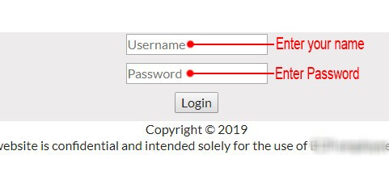
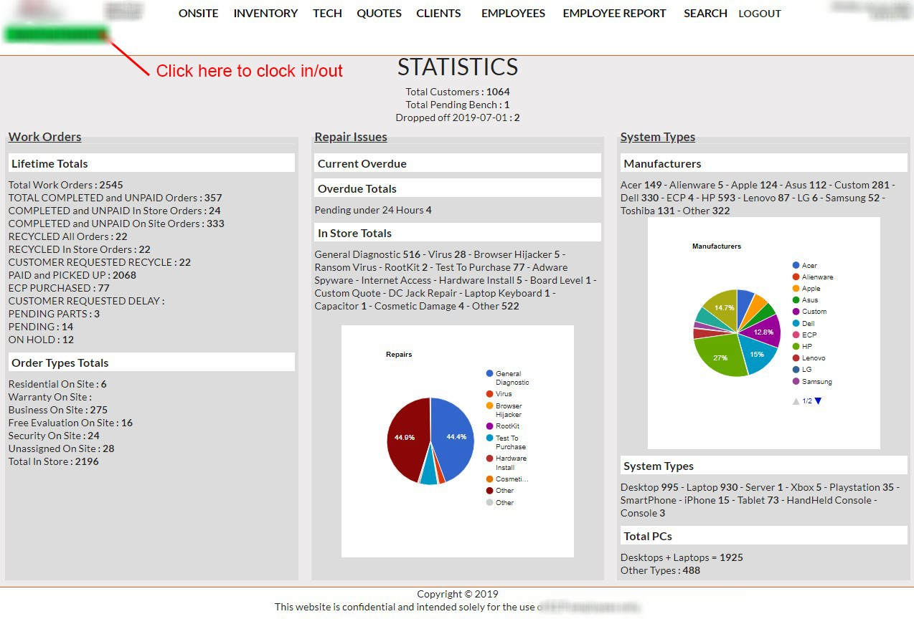
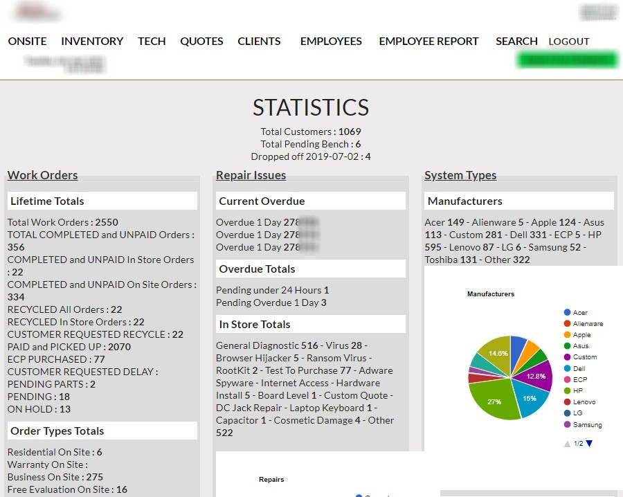

Revised 06/24/2019
Our attitude in the job place is extremely important while at work. Our Customers and Employees DO matter and take pride in giving them the best service possible.
When working with customers all day, answering phone calls & doing repair work; we can find ourselves pretty preoccupied. Sometimes alittle short with customers. Not fully engaing with them because we are wrapped up wth completing everything else. We
want to do things differently.
Here are some ways you can try and remember to do while assisting or attending to customers:
-
Address the customer with complete Respect and Dignity, answer yes sir, no sir. Just rolling with ideas.
-
(more can be filled in here.)
LogIn and enter your given username and password. Now you can select a user name and password in the beginning but at the moment we are not setu to edit and change usernames and passwords. So what you are given works best
for the time being.
User names are not case-sensitive, but passwords are case-sensitive.

After you are logged into the Employee Portal you want to head to the top rght corner of the main page. Look for the Green Clocked In button. (It may look like its on the left in the picture, this picture was shunk to be shown as an example.)

This guide will help you with checking in procedures. As soon as a customer walks inside the store, check in a computer or laptop, this includes/but not limited gaming consoles and printers. Please we very familiar with the main portal page first before
you attend to customer, this will do 2 things for you as an employee.
- 1) Save the customer and you time.
- 2) Give you more confidence as an employee knowing you can handle their needs in a quick effective manner.
Please review the picture below. This is the Main Employee Portal page.

We have the right to record any/all conversations. With that in mind, please make sure to speak to each customer in a mild tone to make sure to get what is being recorded in conversation and for clarity on your part as an associate.
The check-in process is as follows:
- Greet The Customer
Say hi, give them small talk, afterward find out why they came in
the store today.
- Computer / Laptop Check In
For every computer checked in, you must physically run a quick diagnotics before registering them into our system. That includes devices such as desktop computers, physically taking it to the side tech bench posted in the front (left of registers) of
store and connecting them there or physically opening up the laptop on the bench by the registers up front.
-
You MUST visually verfiy to see if the unit powers on and also run a quick
POST check, to verify if the unit POSTs.
-
You MUST check for a Broken or Damaged AC Jack.
-
You MUST check for a Broken or Damaged LCD Screen.
-
You MUST check for cosmetic damage.
This guide will help you with the following up to date pricing. (Revised 6/24/2019)
- ALWAYS OFFER A FREE DIAGNOTICS
We offer a Free Dianotics to all electronic equipment, this includes but not limited to: Desktops, Laptops, Tv's, Monitors, Gaming Consoles, Tablets, Cell Phones, Telephones
Do not quote anybody over the phone or inperson
Have them bring in their device(s). Give our trained technicians time to review the item first hand, giving them time to throughly examine the device(s). After which they will make the judgment call if its worth to fix or recycle.
- Normal Repair - (what does a normal repair entail?)
- Hardware Installation
$35 Labor + Parts - Single Component
$70 Labor + Parts - Anything More
- PSU - Power Supply Installation - (Gaming Computer)
- Password Removal - (Limited Reliability)
- Windows Installation w/Free Data Transfer
- Phone Repair
- Virus Removal
$70 Labor + Software (if needed)
- Custom Computer Build - With or Without OS
- Custom Water Cooling
- Data Transfering / Backup
There is no additional charge for any computers built by ECP technicianss. Any additional price list below, $5 minimum charge per item:
Boxes of misc items should not be accepted as we should not have
to sort out software, etc..
- Harddrive Removal / Drilling
- Small Home Printers
- Medium Size Office Printers
- Large Printers*
- Standup Copiers*
* Check with the Manager before accepting. We may have a backlog of printers from previous owners that we still havent sent for recycle.
Under
NO EXECPTION shall items (ie. computers, laptops, power supplies, etc) or electrical components be accepted for returns if:
- No Returns Past 14 Days
- Same Day Returns
If customers come in and purchase an item, and moments later, 5 10 15mins, even 3hrs later, CHECK THE ITEM - Make sure the iten was not open, check to see if the item(s) are all still there.
OPEN PACKAGE:
Charge the customer a re-stocking fee of 15% of price purchased, explain to the customer that because the product was open and shows signs of being used, there has to be a re-stocking fee. Show the customer the customer their receipt where it says the
return policy.
SEALED PACKAGE:
If the package is in it's original packaging, return the product.
If the product was PURCHASED utilizing the Debt feature and wants to returns the product, NEVER RETURN physical MONEY back to the customer. The Transaction must go thru as a Credit back into their account.
It is important that remind the customer of the service terms. We are NOT liable for ANY Data Loss due to hardware failure both before and after servicing of any computer, laptop, tablet or mobile device.
Data Backup or OFF-Site Storage before or after servicing is the soul responsibilty of the customer. IMPORTANT! - Make sure to ensure the the customer that for extra add insurance on their part to protect their data, they
must Back-Up their own personal or business related Data.
You're employer does have the right to record any/all conversations. With that in mind, please make sure to speak to each customer in a mild tone to make sure to get what is being recorded in conversation and for clarity on your part as an associate.
All the documentation in this page is a culmination of collected data by Jason Cruz.